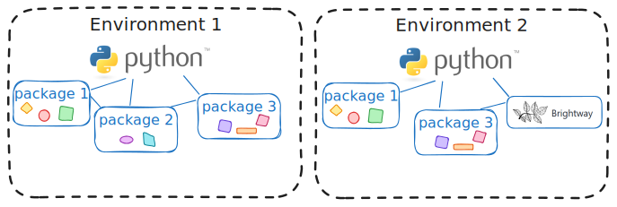

Python
Introduction
Python is a programming language that can be used for many purposes (e.g., data manipulations, calculations, machine learning, graphical user interfaces, web applications).
It is, among others, an object-oriented language, meaning that objects with attributes are manipulated. For instance, for doing an LCA, possible objects and their attributes are:
- a process: name, unit, location, etc.
- a flow: sending process, receiving process, quantity, uncertainty, etc.
- an impact category method: name, unit, list of characterization factors, etc.
Then, functions or methods are available to manipulate the objects.
For a given project, not all objects available for Python are necessary. For instance, objects for doing an LCA are not necessary when doing machine learning, and vice versa. Python is organised in packages, i.e., groups of objects and functions usually developed for a specific application.
Installation
One of the easiest way to get started with Python is to install Anaconda. Follow this link to download Anaconda. Then, follow the installation instructions of the installer.
(Optional - Mamba)
If you think that you will use Python in the future, I recommend installing and using Mamba. It is much faster for “solving environments”, i.e., for installing or updating packages, and for creating new environments. For installing it, open an “Anaconda prompt” and use the command recommended here:
conda install -c conda-forge mambaPython virtual environments
After installing Anaconda, the next step it is to create your working environment, i.e., to create a group of packages that you will use. I imagine it as having different boxes stored on a shelf, each one containing the tools that you need for different activities. Creating on Python environment is like creating a new box, and selecting the packages in that environment is like selecting the tools in your box.
A Python virtual environment contains a specific version of Python and a list of packages with specific versions. For instance, brightway is one example of packages that you can have in your environment.

But why creating these environments? Several reasons:
- It is not recommended to install all packages in the same environment due to compatibility issues: One package uses many others to be able to function. As an example, the Activity Browser uses brightway, but not necessarily the latest version of it. If brightway is updated, the Activity Browser might not function anymore. If one wants to work both with the Activity Browser and the latest version of brightway, the easiest solution is to have two virtual environments: one for the Activity Browser and one for brightway.
- To be able to switch between older versions of the packages. For instance, if a project was made 5 years ago, the code that was written might not be able to work with the latest version of Python or other packages. But it can still run on the environment with the old version of the packages at the time of the project.
How to use environments? I recommend to use the Anaconda prompt, that can be found as any other app on Windows, and to manage environments with writting commands on that prompt. Here is the full documentation for managing Python environments with conda (available with Anaconda). I summarise below the few commands that are useful on a regular basis.
Otherwise, the Anaconda navigator contains an environment management tool.
Create a new environment
To create a new environment called my_env, use:
conda create -n my_envThis environment will then be empty (i.e., no python installed). To install an environment directly with a specific package package_name, use:
conda create -n my_env package_nameManaging packages
The name of the activated environment is displayed in parenthesis at the beginning of the code line in the Anaconda prompt. To get the list of packages installed in your environment, use:
conda listThis is often very useful when you report an error or bug! People can see which version of the packages might cause the error. This list can be saved in a text file with:
conda env export > environment.txtTo get the Python version that is used by the environment, use:
python --versionYou can install a package, here package_name with:
conda install package_nameOr update a package with:
conda update package_nameFor installing and updating packages/environments, you can use mamba by replacing conda with mamba in the code above.
Good practices with environment
From my personal experience, I gathered the following tips.
If one package is updated, there is a risk that compatibility issues with other packages arise. Keep the functioning environment and create another environment with the updated package. If the updated version does not work on a project, the functioning environment is still available for working on the project while the problem is fixed. The environment with the old version can be deleted after being sure that the updated version is functioning.
As explained above, it is good to have the list of packages and their version which allows a project to work. As the list of useful packages might evolve while the project is developed, create a new environment for each project and save the list of packages and their version in a text file (see command here). On another computer, it is then possible to re-create the same environment based on this list.
I need help!
This section is still in development!
How to read errors
Where to find help
If you do not understand your error and how to solve it:
- Ask a colleague if available!
- Ask ChatGPT. Give it your error code, and eventually the chuck of code that is problematic if it is not confidential.
- Ask Google. Somebody probably ran into the same problem and was given a solution.
- Look at the documentation or user manual.
- Ask the community if the question has not already been answered. It can be done via:
- Stackoverflow,
- GitHub (for bugs related to a package).
Resources
This section is still in development!
Cheatsheets
Very useful for beginners (or advanced users!) to have an overview of available commands:
- For data wrangling with pandas
- For generating figures with matplotlib